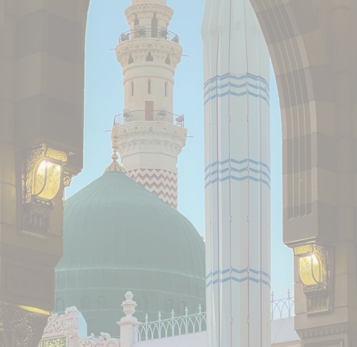

Madinah Al Munawwarah (The Luminous City)
Madinah, the sacred city of Prophet Muhammad (PBUH) is the light of every Muslim’s life. It is the second holiest city in Islam after Makkah and is the place where Masjid-e-Nabawi is situated. Madinah, one of the holiest cities in Islam, is a central destination for millions of Muslims journeying to Saudi Arabia for Hajj or Umrah. At its heart lies Masjid Al-Nabawi, the mosque established by the Prophet Muhammad (PBUH), which also houses his blessed resting place.